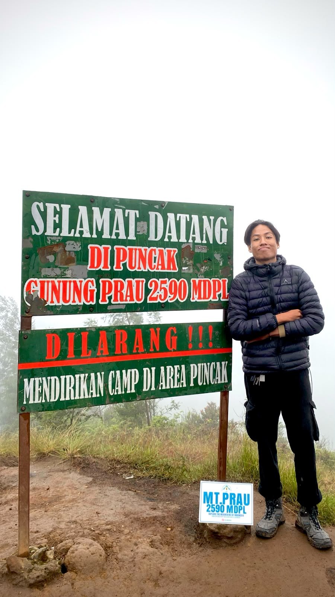
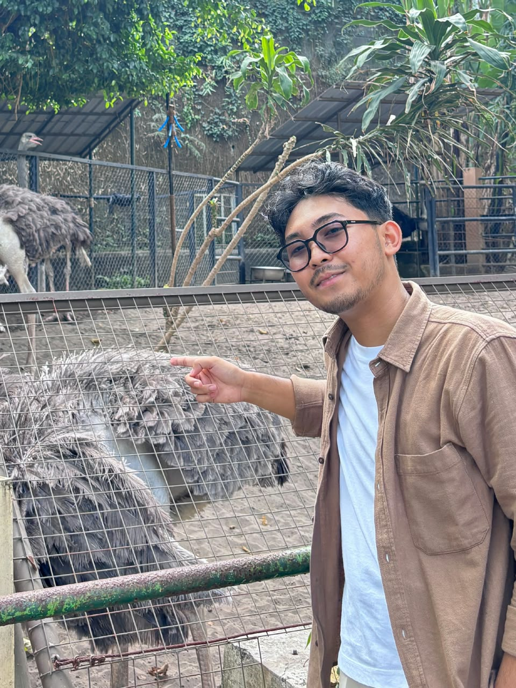

Verifin
Explainable AI-powered Decision Support System untuk Verifikasi Lowongan Kerja Berbasis Bukti OSINT

Hafidz Rizqullah Prasetya
24/535493/SV/24243
Ketua Tim · Tech Lead & AI
Matthew Hayunaji Priantara
24/536179/SV/24400
Anggota · Frontend & Integration

Akmal Manggala Putra
24/536182/SV/24402
Anggota · Backend & OSINT
Dosen Pembimbing
Dr.Eng. Ir. Ganjar Alfian, S.T., M.Eng.
NIP. 11198701202201101
UNIVERSITAS GADJAH MADA
2026
Realita Pencari Kerja & Penipuan Digital
4 Modus Penipuan Rekrutmen di Indonesia
Permintaan Biaya / Deposit
"Transfer biaya tes / seragam / administrasi ke rekening pribadi"
Gaji Fantastis Tanpa Skill
"8–15 juta/bln, min SMA, tanpa pengalaman kerja, langsung diterima"
Melamar via WhatsApp / Chat
Perekrut anonim tanpa surel korporat (@company.com) atau website
Permintaan Dokumen Sensitif
"Wajib kirim foto KTP, KK, & data pribadi lengkap sebelum wawancara"
Kesenjangan Informasi (Information Asymmetry)
Kesenjangan Informasi
Pencari kerja di kanal informal (WhatsApp, Instagram, Telegram) dipaksa memutuskan sebelum memiliki informasi yang memadai.
Ketiadaan Verifikasi Proaktif
Solusi eksisting (job board formal, medsos, imbauan) bersifat reaktif atau berbayar. Belum ada alat verifikasi terpadu pada titik penerimaan.
Kerentanan Ekonomi & TPPO
Desakan ekonomi memudahkan manipulasi psikologis, berujung pada kerugian finansial, pencurian identitas, hingga ancaman TPPO.
Tahu Sebelum Kamu Melamar
Decision Support System berbasis Explainable AI untuk verifikasi proaktif lowongan kerja
Multichannel Input
Menerima 3 kanal input: Teks broadcast, Gambar poster lowongan (PaddleOCR + CLAHE), atau URL web secara otomatis.
Automated OSINT
Investigasi paralel: Whois/DNS domain, reputasi telepon (Kaspersky), metasearch (SearXNG), & peta (Nominatim OSM).
Explainable AI & Graph
Bukan black-box: kontribusi bukti aditif (XAI) + Fraud Network Graph untuk mendeteksi sindikat penipuan berulang.
4 Tahap Pipeline Analisis Berlapis
Ekstraksi Entitas
NER hibrida: Regex deterministik (PHONE, EMAIL, URL) + LLM semantik (ORG, LOC, SALARY).
Investigasi OSINT
Probe paralel: Whois domain, reputasi nomor (Kaspersky), metasearch (SearXNG), & peta (OSM).
Perilaku & Graf
Penalaran sinyal perilaku teks (biaya, KTP, gaji) + deteksi relasi entitas via Fraud Network Graph.
LLM Reasoning & XAI
Sintesis verdict deterministik (temp=0, anti-halusinasi) + perhitungan aditif Skor Risiko 0–100.
Named Entity Recognition (NER) Hibrida
Input Teks / Poster OCR:
{
"perusahaan": "PT Maju Mandur Sejahtera",
"telepon": "0812-3456-7890 (WA Only)",
"email": "hrd.rekruitmen@gmail.com",
"gaji": "Rp 8.000.000 - 15.000.000",
"lokasi": "Jakarta Selatan / WFH",
"posisi": "Admin Online WFH"
}
Entitas Terverifikasi:
- PERUSAHAAN (ORG): PT Maju Mandur Sejahtera (LLM Semantik)
- TELEPON (PHONE): +62 812-3456-7890 (Regex Whitelist)
- EMAIL (Surel): hrd.rekruitmen@gmail.com (Regex Pattern)
- GAJI (SALARY): Rp 8.000.000 – Rp 15.000.000 (Hibrida)
- LOKASI (LOC): Jakarta Selatan (LLM + OSM)
Regex mengekstrak entitas berpola stabil (presisi 100%), LLM menangkap entitas semantik dari poster OCR berantakan. Sistem otomatis fallback ke Regex bila LLM offline.
Validasi Tiga Kanal Input & Kasus Negatif
The Biker Shop
Kanal: Teks Lowongan
✓ Alamat bisnis tervalidasi di Google Maps & OSM
✓ Website resmi aktif dengan sertifikat SSL HTTPS
✓ Domain terdaftar dan berumur >3 tahun
✓ Tidak ada indikasi biaya pendaftaran / seragam
VinFast Yogyakarta
Kanal: Gambar Poster (OCR)
⚠ Surel kontak memakai akun gratisan (@gmail.com)
⚠ Alamat tidak spesifik (tanpa nomor jalan/titik jelas)
⚠ Hanya satu kontak perorangan, tanpa website resmi
✓ Merek global dikenal, namun kanal perekrutan informal
PT SISI (Semen Indonesia)
Kanal: URL Web
✓ Anak usaha resmi PT Semen Indonesia (Persero) Tbk
✓ Domain korporat resmi sisi.id terdaftar di Whois
✓ Jejak digital institusional kuat dan terverifikasi
✓ Alamat kantor & kanal HRD resmi terdaftar
Scam Admin Online WFH
Kasus Negatif Penipuan
✕ Permintaan transfer biaya admin fee Rp 500.000
✕ Minta kirim foto KTP & data pribadi via WhatsApp
✕ Gaji fantastis (15 jt) tanpa syarat pengalaman kerja
✕ Nomor tidak terdaftar & perusahaan phantom (fiktif)
Mengapa Lowongan Ini Terdeteksi BAHAYA?
Komposisi Sinyal Risiko
Permintaan Biaya / Deposit
"Transfer admin fee Rp 500.000 ke rekening pribadi sebelum proses"
Permintaan Dokumen Sensitif
"Wajib kirim foto KTP & data diri lengkap via WhatsApp"
Gaji Tidak Realistis
"8–15 juta/bln, min SMA, tanpa pengalaman, langsung diterima"
Kontak Anonim / Tanpa Domain
"Hanya WhatsApp nomor pribadi, tidak ada domain/surel korporat"
Perusahaan Phantom (Fiktif)
"Nama PT tidak terdaftar dan tidak ditemukan pada sumber publik"
S_risiko = S_dasar (12) + Σ φ_i (35+25+20+15+10) = 117 → Capped at 95
Technology Stack & Engineering
Frontend Layer
Backend Services
AI & NLP Engine
OSINT & Data Layer
Arsitektur: Microservices-ready & Async-First Pipeline • Database: Relasional (PostgreSQL) + Fraud Network Graph • Deployment: Dokploy & Vercel
Estimasi Dampak Kuantitatif & Nilai Sistem
Verifikasi Cepat, Terbuka, dan Transparan
Rencana integrasi UGM Career (Kantor Alumni UGM) untuk perlindungan ribuan alumni, memperkuat Fraud Network Graph secara kolektif.
User Journey: Mudah, Cepat, & Transparan
Akses Aplikasi
Buka web browser → Langsung pakai tanpa registrasi akun
Pilih Kanal Input
Tempel Teks / Unggah Poster (OCR) / Masukkan URL Web
Pantau Progres
Modal progres bertahap: Ekstraksi → OSINT → Graph → XAI
Audit Hasil & Verdict
Badge warna, Skor Risiko 0–100, narasi LLM, & bukti XAI
Ambil Tindakan
Lanjutkan proses aman atau laporkan ke komunitas
Desain Intuitif untuk Pengguna Awam • Transparansi Penuh • Intervensi Pada Titik Kritis
Tahu Sebelum Kamu Melamar
Verifin
Job Trust Infrastructure untuk Perlindungan Pencari Kerja Indonesia
Tim Three Achilles — Hafidz Rizqullah P. • Matthew Hayunaji P. • Akmal Manggala P.
Dosen Pembimbing: Dr.Eng. Ir. Ganjar Alfian, S.T., M.Eng. (NIP. 11198701202201101)
GEMASTIK XIX 2026 — Divisi VIII Pengembangan Perangkat Lunak
UNIVERSITAS GADJAH MADA • 2026